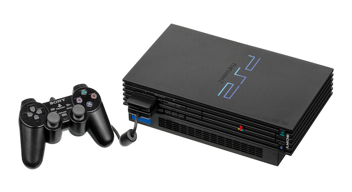

Sobre o PlayStation 2
O PlayStation 2 (PS2) é um console de sexta geração produzido pela Sony Computer Entertainment. Ele foi lançado no dia 4 de março de 2000 no Japão, no dia 26 de outubro na América do Norte, e posteriormente, no dia 24 de novembro na Europa. Em seu lançamento, dividiu espaço no mercado com o Dreamcast da Sega, o GameCube da Nintendo e o Xbox da Microsoft.
O PS2 alcançou tamanha popularidade a ponto de se tornar o console mais vendido de todos os tempos, com mais de 155 milhões de unidades comercializadas. Além disso, mais de 420 milhões de jogos originais (sem contar os jogos da "feirinha") do console foram vendidos, possuindo mais de 4000 jogos oficiais. Grand Theft Auto: San Andreas, que marcou gerações, é o jogo mais vendido do videogame da Sony.
Minha história
Lembro perfeitamente de minha mãe chegando tarde da noite do trabalho com uma caixa gigante, o que despertou a curiosidade de todos. Estávamos eu, meus 2 irmãos e diversos amigos do meu bairro ansiosos para abrí-la. Lá estava um PlayStation 2 Slim que representava mais do que diversão, mas sim a dedicação e o amor de uma mãe por seus filhos. Minha mãe cuidou de nós sozinha por grande parte de minha infância e adolescência, e lembrar de todo seu esforço para nos fazer felizes é honrar sua maternidade.
Entretanto, esse ainda não foi o primeiro console, já que tínhamos um PlayStation 2 Fat antes. Infelizmente, eu era muito pequeno e não tenho tantas lembranças quanto com o Slim, no qual eu joguei um jogo que guardo em meu coração (mais do que GTA: San Andreas). Esse jogo veio originalmente com o console, provavelmente o único original de PS2 que tínhamos. Ele era o Sly 3: Honor Among Thieves.
![Imagem com os principais personagens do jogo Sly 3. À esquerda, Bentley, uma tartaruga verde cadeirante de óculos e capacete. Sua cadeira de rodas possui equipamentos tecnológicos, como teclados e telas. Ao meio, está Sly Cooper, um guaxinim esguio de boina e roupa azul com detalhes dourados nas luvas e gola, uma faixa vermelha em sua perna esquerda e um objeto dourado semelhante à uma foice e bengala. À direita, Murray, um hipopótamo rosa alto e musculoso com um dente para fora da boca. Ele veste uma blusa azul, um cinto laranja de fivela dourada, luvas e capuz vermelhos e uma capa e sapatos da cor ciano.](img/sly.jpg)
O jogo foi lançado em 2007 pela Sucker Punch Productions, também desenvolvedora de Infamous e Ghost of Tsushima, exclusivamente para PS2. A história acompanha Sly e sua gangue de ladrões que busca recuperar a posse do cofre de sua família, no qual a linhagem de ladrões guardava seus maiores tesouros roubados. Sua jogabilidade satifatória, personagens carismáticos, modo cooperativo e inovação com óculos 3D marcaram minha jogatina.
Além de Sly 3, muitos outros jogos foram importantes nessa fase de minha vida. Entre eles, estão:
- Bomba Patch
- GTA: San Andreas
- Mortal Kombat: Shaolin Monks
- Crash of the Titans
- Marvel Super Hero Squad
- Scooby-Doo! First Frights